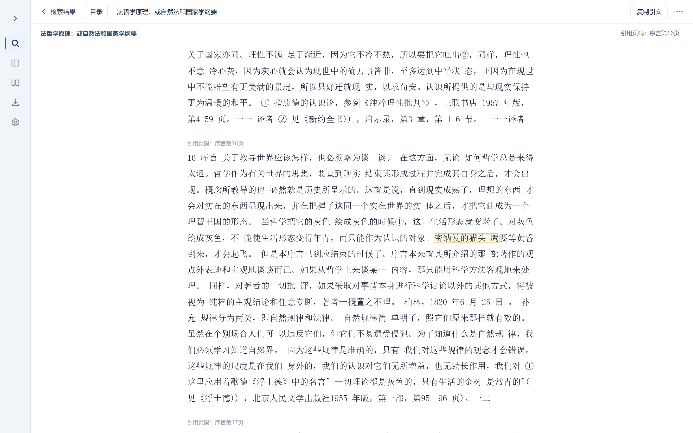
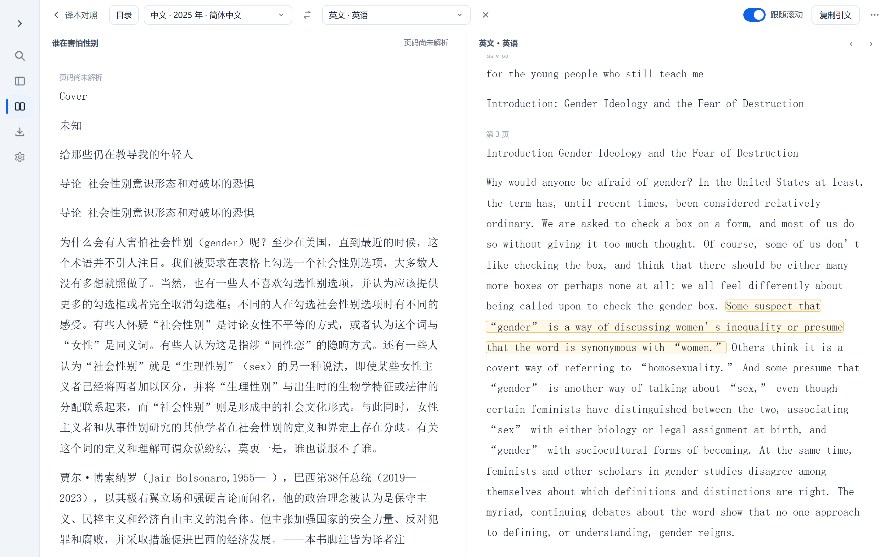
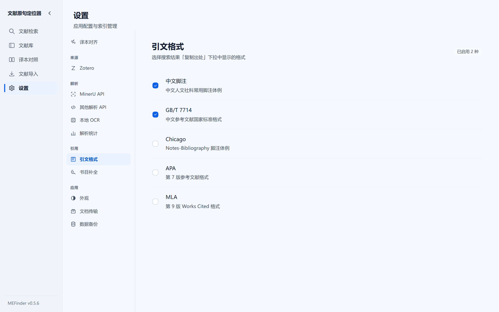

01
收书
PDF、Word、EPUB 直接进库，文本型文件在本机解析。扫描件、乱码文本层和复杂版面，才由你决定是否交给 MinerU 或其他视觉 API。
Zotero 分类可以只读同步过来；换设备时导出 .mefinder.zip 文档包，重新导入即可，不必重跑 OCR。
PDF · Word · EPUB 本地文献原句检索
文献原句定位器（MEFinder）是一款本地优先的文献原句检索、页码定位与引文辅助工具。
完整句子、残缺片段、带着错字的记忆都可以交给它。它在你自己的文献库里找回原文，附上上下文和出版方页码，再把出处排成你要的格式。
书里印的是「密纳发」。换个译名、记错两个字，模糊模式照样把它找回来，并给出引用页码。真实软件检索的是你整个文献库，不是这四段。
功能
01
PDF、Word、EPUB 直接进库，文本型文件在本机解析。扫描件、乱码文本层和复杂版面，才由你决定是否交给 MinerU 或其他视觉 API。
Zotero 分类可以只读同步过来；换设备时导出 .mefinder.zip 文档包，重新导入即可，不必重跑 OCR。
02
每本文献带上作者、译者、出版社、页数和页码状态。书目待补全、页码待处理单独列在底部，点进去就能处理；同一部作品的不同版本在这里互相关联。
可按来源、格式和文献范围筛选，也可把指定页按原书页码或 PDF 物理页码导出成 Markdown。
03
五种模式：自动、精确、忽略空格、忽略标点、模糊。残缺的半句话、记混的译名、OCR 留下的错字都能命中，旁边就是它引用的那一页。
繁简统一检索默认开启：用简体关键词命中繁体原文，结果与导出保留原文写法。
04
从命中处直接打开结构化文本，读命中段落和相邻内容，也能翻回原始 PDF 页面。目录读取已入库的一、二级标题。
可在设置里开启独立阅读窗口，让阅读与对照单独移动、缩放；关闭时仍在主窗口内读。

05
把同一部作品的原文与译本、或不同版本归入作品组，选两版逐段对齐，双栏对照阅读，在版本之间定位对应文字。对齐在本机完成。
两栏跟随滚动同步推进，对齐到的段落用琥珀色框出，选中即可复制引文；页码状态按栏各自标注——英文基准有出版方页码，中译本没有，就如实显示「页码尚未解析」。

06
识别并补全书目信息，把出处一次排成中文脚注、GB/T 7714、APA、MLA 或 Chicago。已配对的脚注随正文带出。
页码区分 PDF 物理页与书内引用页，自动映射之外还能人工分段校准。

模块
软件的设置页就是这张表：来源、解析、引用、应用各自成组，用不到的一直留着也不会碍事。下面按环节列出当前实现，以及它的边界。
| 环节 | 现在能做什么 | 边界 |
|---|---|---|
| 来源 | 手动导入 · .mefinder.zip 文档包 · Zotero 7 本机只读接口同步分类 | Zotero 同步本版只支持「我的文库」，群组文库不在范围内 |
| 解析 | PDF / Word / EPUB 本机解析 · MinerU API · 其他视觉解析 API · 本机离线 OCR | 本机 OCR 覆盖日文、日文古籍与繁体竖排古籍，不提供现代中文 OCR |
| 检索 | FTS5 trigram 全文 · 自动 / 精确 / 忽略空格 / 忽略标点 / 模糊 · 繁简统一 | 模糊模式给的是候选与可信度，不保证唯一正确答案 |
| 页码 | PDF 物理页与书内引用页分开 · 自动映射 · 人工分段校准 · EPUB page-list / pagebreak | 没有出版方页码时如实标注「页码尚未解析」，不推算、不补数 |
| 对照 | 作品组 · 原文与译本逐段自动对齐 · 双栏阅读 · 正文范围人工修正 · 一次全部重跑 | 自动对齐只支持 PDF 与 EPUB 文献 |
| 引用 | 书目识别与补全 · 中文脚注 / GB/T 7714 / APA / MLA / Chicago · 按页导出 Markdown 与 EPUB | EPUB 页外脚注暂不保证随正文带出 |
| MCP | 13 个工具接入支持 MCP 的 AI 助手：批量核对引文是否逐字命中、比对错引差异、按主题召回段落、读取版权页与题录缺口、辅助修正对齐 | 侧车读的是同一个本机库；库被桌面端占用时以桌面端为准 |
| 数据 | SQLite schema 版本化迁移 · 嵌入向量携带 model_id，不跨模型混用 | 旧版本无法打开升级后的库 |
AI 助手
MEFinder 自带一个本地 MCP 服务，Windows 与 macOS 的发布包里都有 MEFinderMCP，不用装 Python。Claude Code、Codex 这类桌面 Agent 连上它，就能直接调用 13 个工具读你的文献库。桌面端不用开着，MCP 进程本身也不联网。
库里存的已经是解析好的页级文本、页码映射和题录。Agent 调工具拿到的是带文献 ID、页码锚点与字符区间的结构化结果，核完能直接指回原页。把 PDF 原样交给 Agent 读，每次都要现场解析一遍，扫描件还得先过 OCR。
把正文里的引文一段段交给 Agent，它用 verify_quotes 批量回原文比对，逐条给 verified（逐字命中）、approximate（疑似错引）、not_found（没找到）。疑似错引的那几条再用 diff_quote 跟最接近的原句逐字符对齐，多哪几个字、漏哪几个字、改了哪个字都标出来。
请用 mefinder 的 verify_quotes 批量核对下面这五条引文，逐条告诉我是否逐字命中。读你的 Obsidian 笔记靠的是 Agent 自己的文件权限，MEFinder 不碰笔记。它管另一半：笔记里每条引文在书里有没有对应的原句、页码对不对、上下文有没有被截歪。核对结果按笔记里的顺序列回来，你只管决定哪几条要改。
读我 vault 里这篇笔记，把其中所有引文逐条交给 mefinder 核对，指出与原句不一致的和页码对不上的。| 用途 | 工具与产出 |
|---|---|
| 定位与阅读 | list_documents 列出已入库文献并拿到稳定 ID · locate_quote 定位原句，返回上下文、匹配方式与页码状态 · read_document_window 从命中处读有界窗口，看前后页与相邻段落 |
| 核对 | verify_quotes 一次批量核对多条引文 · diff_quote 把疑似错引与原句逐字符对齐，标注增、漏、改 |
| 检索 | search_passages 只记得大意时按相关性召回段落。相关性检索，命中等于内容相关，逐字核对还要再走 locate_quote |
| 译本对照 | find_parallel_passages 给一句中文，返回其他译本的多个候选与前后文；Agent 比较跨语言语义、专名和引文结构之后才确认，证据不唯一就报歧义 |
| 题录 | read_bibliographic_pages 读取版权页与 CIP 页候选 · read_bibliographic_metadata 列出现有字段的已填、存疑、缺失 |
| 对齐修正 | propose_alignment_correction 记录待确认的修正提议 · confirm_alignment_correction 经你同意才生效 · revoke_alignment_correction 随时撤销 · list_alignment_corrections 复核已有修正 |
13 个工具里 10 个只读。3 个写操作只用于对齐修正，且必须你明确确认之后 Agent 才能调用。工具本身不做问答、总结或翻译。
下面用的是 Windows 绿色版的示例路径，换成你机器上的位置即可：安装版通常在 C:\Users\<你的用户名>\AppData\Local\Programs\MEFinder\MEFinderMCP.exe，macOS 在 /Applications/MEFinder.app/Contents/MacOS/MEFinderMCP。Codex 也可以走设置里的表单，类型选 STDIO。
claude mcp add --transport stdio --scope user mefinder -- "D:\MEFinder\MEFinderMCP.exe"codex mcp add mefinder -- "D:\MEFinder\MEFinderMCP.exe"图文步骤、WorkBuddy 与 ZCode 的接法，以及最常见的配置错误都在 MCP 配置教程 里。配好之后在 Agent 里问一句「请只使用 mefinder，列出当前已经导入的文献」，能列出你库里的书就算通了。
还有一条要说清楚：MCP 进程不访问网络，可工具返回的原文和上下文会进入 AI 客户端的对话记录与模型上下文。未公开发表的文献、别人的手稿，接之前先想清楚这一点。
边界
索引、检索、页码映射、对齐和大部分元数据处理都在你本机完成，文件留在原处，数据库是一个你自己能备份的 SQLite 文件。没有账号，没有云端同步，没有遥测上传你的阅读记录。下面这几条是设计约束，不是待补功能。
下载
Version 0.5.5 · 发布于 2026-09-24 · 更新日志 · v0.5.6 迭代中（主题：Zotero 来源同步）
| 平台 | 文件 | 大小 | 校验 |
|---|---|---|---|
| Windows | 安装包 setup.exe | 74.9 MB | SHA-256 |
| Windows | 便携包 portable.zip | 89.7 MB | SHA-256 |
| macOS · Apple 芯片 | dmg · zip | 95.6 MB | 随附 sidecar |
| macOS · Intel | dmg · zip | 99.0 MB | 随附 sidecar |
缘起
作者是文科在读硕士。写小论文时，每到定稿前都要把正文里的引文一条条重新核对：原文有没有抄错，出处有没有写对，页码准不准，对上下文的理解有没有偏差。写大论文时文献更多了，于是一遍遍在几个 PDF 之间打开、搜索、翻页、核对。
找了一圈没有贴合这种需求的软件，就自己做了一个。这也是第一次完整做完一个软件项目，很多东西边做边学。如果它没找到你确定存在的句子，或者页码、题录处理得不对，欢迎附上具体样例提 Issue。